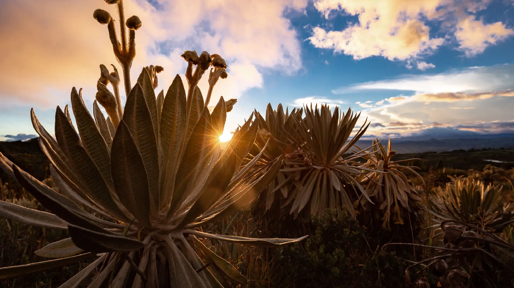

Las especies endémicas son aquellas que tienen una distribución restringida a regiones, ecosistemas, cuencas hidrográficas y otras áreas geográficas específicas. Representan un objeto de conservación de alto valor pues su pérdida implica, por lo general, la disminución de genes, atributos funcionales y características ecológicas únicas que no pueden recuperarse. Los animales endémicos son un termómetro del estado de salud de un territorio. Estas especies requieren una alta atención ya que al distribuirse en áreas pequeñas tienen mayor susceptibilidad a la extinción o a la disminución de sus poblaciones.

¿Por qué somos megadiversos?
Hay 17 países considerados megadiversos. Entre todos albergan 70% de la biodiversidad mundial, lo que los convierte en piezas vitales para la conservación, preservación y regeneración de la variedad de seres vivos a nivel mundial. Nuestro país es uno de los más megadiversos de todo el planeta. Entre nuestras fronteras existen ecosistemas únicos que son encargados de sustentar una vasta gama de especies de flora y fauna, las cuales desempeñan funciones cruciales en el mantenimiento de los ciclos naturales del planeta.